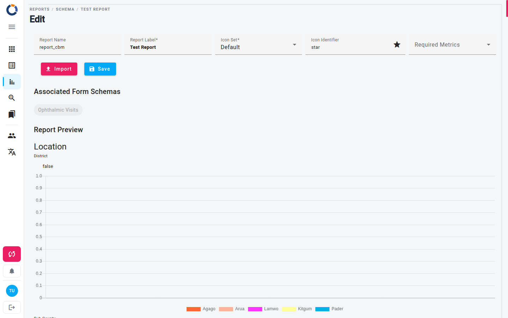

Modifier le schéma du rapport
La page Modifier le schéma du rapport vous permet de créer un nouveau schéma de rapport ou de modifier un schéma existant. Un schéma de rapport définit la structure, la mise en page et les sources de données d'un rapport dans Dino. Son contenu provient d'un fichier XLSReport que vous importez sur cette page.

Champs de la page
| Champ | Description |
|---|---|
| Nom de rapport | Obligatoire. Doit être unique : s'il est déjà utilisé, la page affiche Ce nom est déjà utilisé. |
| Étiquette du rapport | Obligatoire. Le nom affiché dans les listes et les cartes. |
| Ensemble d'icônes | Défaut ou Humanitarian. |
| Icône de formulaire | Choisissez une icône dans la liste de saisie semi-automatique. L'aperçu se met à jour en direct. |
| Mesures requises | Les mesures qui doivent être choisies lorsqu'un rapport est généré à partir de ce schéma. |
Sous les champs, la page affiche :
- Schémas de formulaire associés – les form schemas utilisés par le rapport, en lecture seule. Ils sont repris du fichier XLSReport importé lorsque vous enregistrez.
- Aperçu du rapport – le rapport généré à partir du schéma importé ou enregistré.
Les sources de données, les colonnes et les filtres sont tous définis dans le fichier XLSReport : la page ne propose aucun contrôle pour les choisir.
Créer un nouveau schéma de rapport
- Ouvrez la section Rapports dans le menu principal.
- Cliquez sur le bouton + (Add new Reports schema) dans le coin inférieur droit.
- Saisissez le Nom de rapport et l'Étiquette du rapport, ainsi que, si vous le souhaitez, l'icône et les Mesures requises.
- Cliquez sur Importer, puis sur Choisir un fichier et sélectionnez votre fichier XLSReport (.xls ou .xlsx).
- Cliquez sur Appliquer : le fichier est chargé dans la page et affiché dans l'Aperçu du rapport.
- Cliquez sur Enregistrer pour stocker le schéma. Enregistrer reste désactivé tant que les champs obligatoires ne sont pas valides.
Importer avant d'enregistrer
Un nouveau schéma de rapport ne peut pas être enregistré sans fichier importé : tenter de l'enregistrer vide affiche Oops! Something went wrong saving the Report. Appliquer ne fait que charger le fichier dans la page ; rien n'est stocké avant que vous ne cliquiez sur Enregistrer.
Modifier un schéma de rapport existant
- Ouvrez la section Rapports.
- Sur la carte du schéma de rapport, cliquez sur l'icône en forme de crayon (Modifier le schéma du rapport).
- Modifiez les champs, ou importez un nouveau fichier XLSReport pour remplacer le contenu du rapport.
- Cliquez sur Enregistrer pour mettre à jour le schéma.
Pour supprimer un schéma de rapport, cliquez sur l'icône en forme de corbeille (Supprimer le schéma du rapport) sur sa carte. Un schéma auquel des rapports sont encore associés ne peut pas être supprimé : supprimez d'abord ses rapports.
Étapes suivantes
Après avoir enregistré votre schéma de rapport, vous pouvez :
- Accéder à la page Rapports pour consulter et exécuter votre nouveau rapport.
- Utiliser Edit Report pour travailler sur le rapport lui-même une fois le schéma en place.
- Revenir à cette page pour effectuer d'autres ajustements si nécessaire.